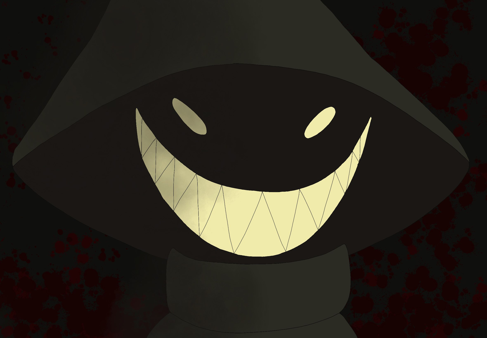
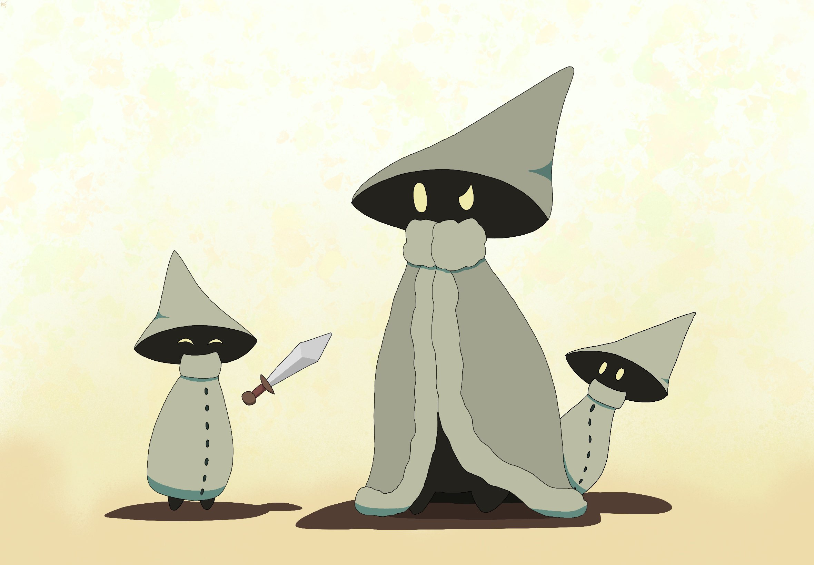
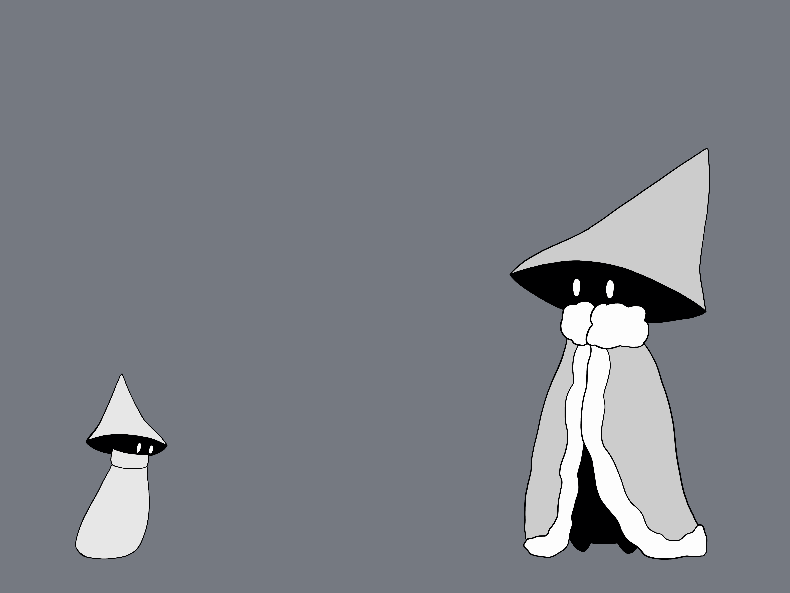
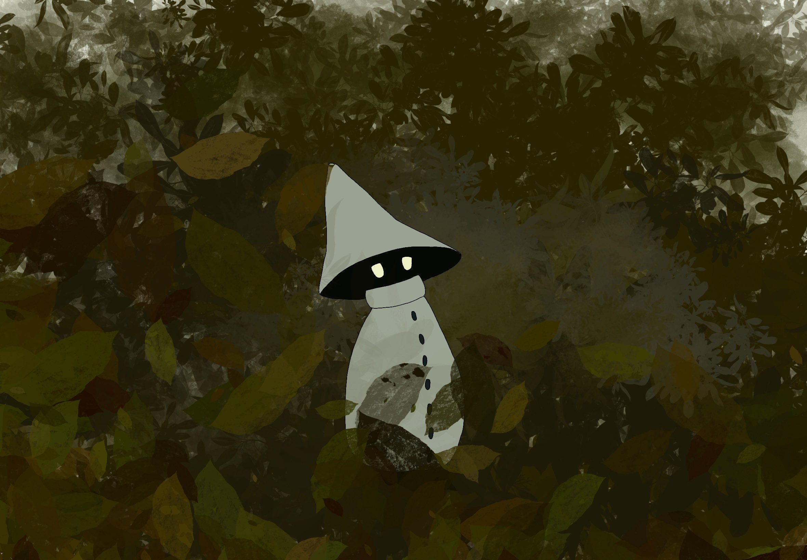
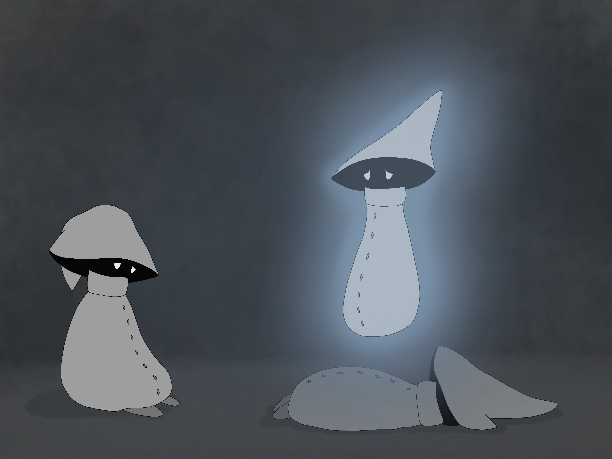
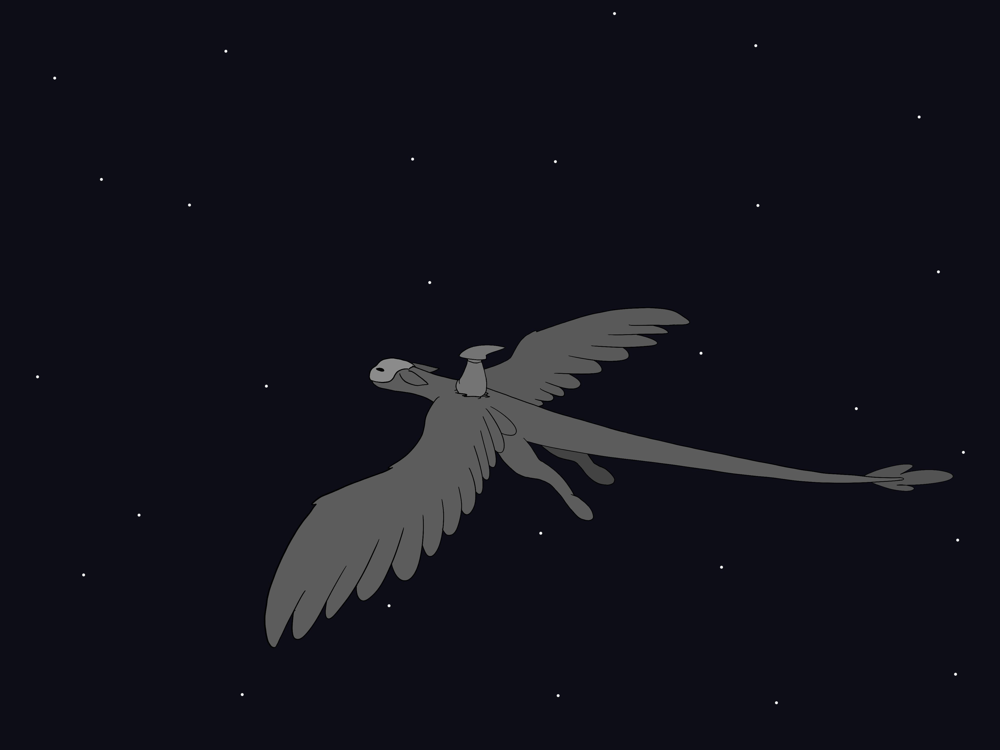
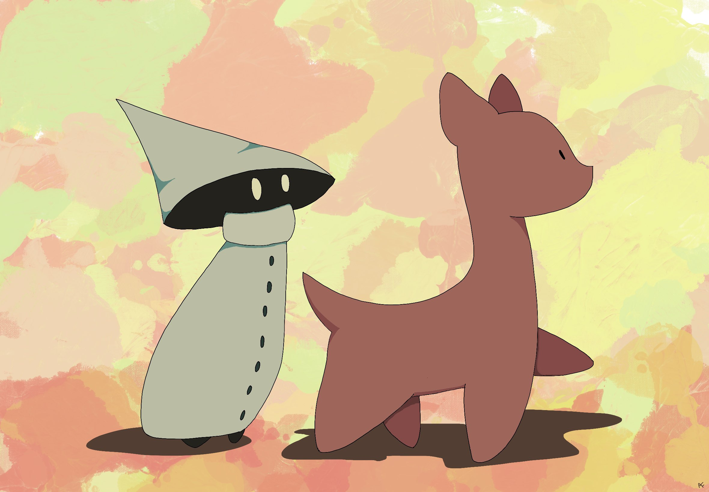

Mysterious Men
Appearance

Every Mysterious Man wears a large green hat and a long green cloak. The hat is shaped somewhat like a pointed wizard's hat, in a large cone shape that obscures their face such that only a pair of glowing yellow eyes can be seen. Occasionally they may show their extremely pointed teeth, but this rarely occurs as they consider this a display of aggression. It is unknown what their physical form looks like beneath the hat and cloak.

The cloak completely conceals their body, save for small feet which show from the bottom. It has a thick collar and seven dark green buttons along its length. It has no sleeves, since Mysterious Men do not have arms. This is not an issue as it can pick up objects using telekinesis (see Behavior for more information). The cloak serves to regulate the Mysterious Man's body temperature and is never removed, even upon death. It is said that to pry a the clothing off of a Mysterious Man is to cause great misfortune to befall a person's family.
Each Mysterious Man starts out about 4 inches tall, and grows over the next 50 years until it reaches its mature height at about 12 inches tall. If a tribe does not have a leader, referred to as a Mysterious Monarch, the eldest Mysterious Man will then grow to about 16 inches tall, regardless of its age. It will also don a different cloak from the rest, one that has a ruffled hem and collar and that doesn't have any buttons.
Behavior
Temperament
The Mysterious Man is generally very curious and mischievous. It loves to explore new locations, meet new creatures, and learn new things. Mysterious Men can pick up new information very quickly and seem to have near perfect memory. They do not hold grudges however, and are quick to forgive, if not to forget.
Communication
Mysterious Men do not have a spoken language, rather they communicate to each other through telepathic emotions and memories. When communicating with other species, if they happen to know the written language they may choose to write, or the more likely scenario, they may just default to facial expressions.
Social Hierarchy

Mysterious Men have a largely flat social hierarchy, excluding the Mysterious Monarch. Everyone in the tribe works together to watch over young and to teach each other new things. The Mysterious Monarch serves as a protector of the tribe as well as an intermediary between the tribe and unknown/untrusted creatures. In exchange, the tribe places their full trust in the Mysterious Monarch and generally does not question its decisions on where to travel and who to interact with.
Mysterious Men are a trusting and well-intentioned species, and do not typically find the need to throw out members of their tribe. Because of their telepathic links they often preempt any negative thoughts or actions and gently redirect the would-be transgressor. If one member of a tribe has proven itself to typically make poor or dangerous decisions, the Mysterious Monarch will assign a rotating cast of caretakers to make sure they don't get into too much trouble.
If a tribe gets too large, typically more than a dozen members, a portion of the tribe may split off and form a new tribe. This is done voluntarily and none hold grudges against others for choosing or not choosing to leave.
Reproduction
Mysterious Men reproduce asexually. When living in an area with a great abundance of joy, hope, and comfort, a Mysterious Man may spontaneously pop into existence. This is not at all surprising to any Mysterious Men currently in the area and they will welcome the newcomer into their tribe. If there are multiple tribes in a given location, they will not attempt to persuade the newcomer to their tribe. Instead, they allow the newcomer to form a telepathic connection with each Mysterious Monarch, and the newcomer will choose which tribe to join.
Nomadic Behavior

Due to their curious nature, tribes of Mysterious Men will often roam about exploring. They tend to travel towards areas of greater happiness and away from areas of greater suffering. They do not need to travel, however, and tribes may remain in one place for many years if they find sufficient entertainment.
Sickness and Death

Mysterious Men do not need to consume food or drink, and they are unaffected by pathogens or extreme temperatures. They will, however, fall ill if exposed to negative emotions for long periods of time. This will cause them to be physically weak and slow, and they will not be able to perform magic properly. Mysterious Men generally do not die from illness, but since they are also susceptible to physical injury, they may be more easily killed by other creatures in their weakened state. This is not generally a concern as Mysterious Men are not hunted, since their corpses disintegrate into dust in the sunlight, leaving only their hat and cloak behind.
When a member of a tribe passes away, the tribe will hold vigil over the member during the night. In the morning, they will watch the body turn to dust at sunrise and then bury the hat and cloak somewhere that the tribe agrees the fallen member would deem beautiful. Sometimes this may take a while to find as the tribe travels through various terrain, but they will never fail to eventually bury the clothing.
Interaction with Other Species
Mysterious Men are on very good terms with both the Moop and the Corfael. Despite the Moop's ambivalence towards members of its own species, they seem to enjoy the company of Mysterious Men. Mysterious Men often take a Moop into their tribe and they will live and travel together for many years. Corfael prefer the company of their own kind, but are more than willing to transport Mysterious Men on their backs when they happen to be travelling in the same direction.


Abilities
The red fox (Vulpes vulpes) is the largest of the true foxes and one of the most widely distributed members of the order Carnivora, being present across the entire Northern Hemisphere including most of North America, Europe and Asia, plus parts of North Africa. It is listed as least concern by the IUCN.[1] Its range has increased alongside human expansion, having been introduced to Australia, where it is considered harmful to native mammals and bird populations. Due to its presence in Australia, it is included on the list of the "world's 100 worst invasive species".[3] The red fox originated from smaller-sized ancestors from Eurasia during the Middle Villafranchian period,[4] and colonised North America shortly after the Wisconsin glaciation.[5] Among the true foxes, the red fox represents a more progressive form in the direction of carnivory.[6] Apart from its large size, the red fox is distinguished from other fox species by its ability to adapt quickly to new environments. Despite its name, the species often produces individuals with other colourings, including leucistic and melanistic individuals.[6] Forty-five subspecies are currently recognised,[7] which are divided into two categories: the large northern foxes and the small, basal southern grey desert foxes of Asia and North Africa.[6] Red foxes are usually found in pairs or small groups consisting of families, such as a mated pair and their young, or a male with several females having kinship ties. The young of the mated pair remain with their parents to assist in caring for new kits.[8] The species primarily feeds on small rodents, though it may also target rabbits, squirrels, game birds, reptiles, invertebrates[6] and young ungulates.[6] Fruit and vegetable matter is also eaten sometimes.[9] Although the red fox tends to kill smaller predators, including other fox species, it is vulnerable to attack from larger predators, such as wolves, coyotes, golden jackals, large predatory birds such as golden eagles and Eurasian eagle owls,[10] and medium- and large-sized felines.[11] The species has a long history of association with humans, having been extensively hunted as a pest and furbearer for many centuries, as well as being represented in human folklore and mythology. Because of its widespread distribution and large population, the red fox is one of the most important furbearing animals harvested for the fur trade.[12]: 229–230 Too small to pose a threat to humans, it has extensively benefited from the presence of human habitation, and has successfully colonised many suburban and urban areas. Domestication of the red fox is also underway in Russia, and has resulted in the domesticated red fox.
Distribution and Habitat
The red fox (Vulpes vulpes) is the largest of the true foxes and one of the most widely distributed members of the order Carnivora, being present across the entire Northern Hemisphere including most of North America, Europe and Asia, plus parts of North Africa. It is listed as least concern by the IUCN.[1] Its range has increased alongside human expansion, having been introduced to Australia, where it is considered harmful to native mammals and bird populations. Due to its presence in Australia, it is included on the list of the "world's 100 worst invasive species".[3] The red fox originated from smaller-sized ancestors from Eurasia during the Middle Villafranchian period,[4] and colonised North America shortly after the Wisconsin glaciation.[5] Among the true foxes, the red fox represents a more progressive form in the direction of carnivory.[6] Apart from its large size, the red fox is distinguished from other fox species by its ability to adapt quickly to new environments. Despite its name, the species often produces individuals with other colourings, including leucistic and melanistic individuals.[6] Forty-five subspecies are currently recognised,[7] which are divided into two categories: the large northern foxes and the small, basal southern grey desert foxes of Asia and North Africa.[6] Red foxes are usually found in pairs or small groups consisting of families, such as a mated pair and their young, or a male with several females having kinship ties. The young of the mated pair remain with their parents to assist in caring for new kits.[8] The species primarily feeds on small rodents, though it may also target rabbits, squirrels, game birds, reptiles, invertebrates[6] and young ungulates.[6] Fruit and vegetable matter is also eaten sometimes.[9] Although the red fox tends to kill smaller predators, including other fox species, it is vulnerable to attack from larger predators, such as wolves, coyotes, golden jackals, large predatory birds such as golden eagles and Eurasian eagle owls,[10] and medium- and large-sized felines.[11] The species has a long history of association with humans, having been extensively hunted as a pest and furbearer for many centuries, as well as being represented in human folklore and mythology. Because of its widespread distribution and large population, the red fox is one of the most important furbearing animals harvested for the fur trade.[12]: 229–230 Too small to pose a threat to humans, it has extensively benefited from the presence of human habitation, and has successfully colonised many suburban and urban areas. Domestication of the red fox is also underway in Russia, and has resulted in the domesticated red fox.